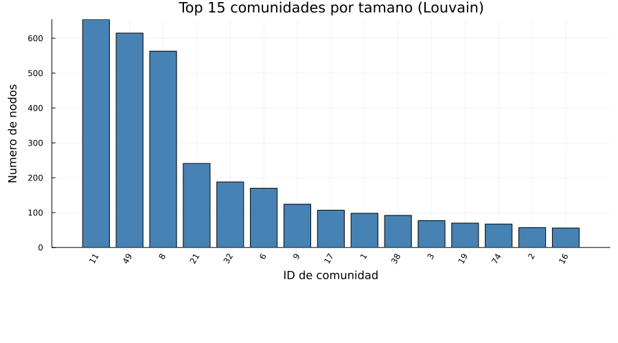
Las 15 comunidades mas grandes detectadas por el algoritmo Louvain, ordenadas por numero de nodos.
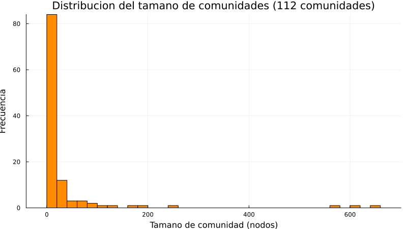
Histograma que muestra cuantas comunidades tienen cada rango de tamano. Una distribucion sesgada indica la presencia de unas pocas comunidades grandes y muchas pequeñas.
| Vertice interno | Nodo original | Comunidad |
|---|---|---|
| 1 | 0 | 3 |
| 2 | 1 | 41 |
| 3 | 2 | 3 |
| 4 | 3 | 53 |
| 5 | 4 | 40 |
| 6 | 5 | 100 |
| 7 | 6 | 5 |
| 8 | 7 | 3 |
| 9 | 8 | 108 |
| 10 | 9 | 9 |
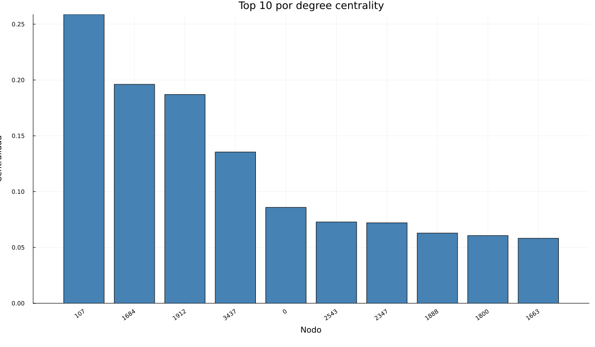
Muestra los usuarios con mayor numero de conexiones directas dentro de la red.
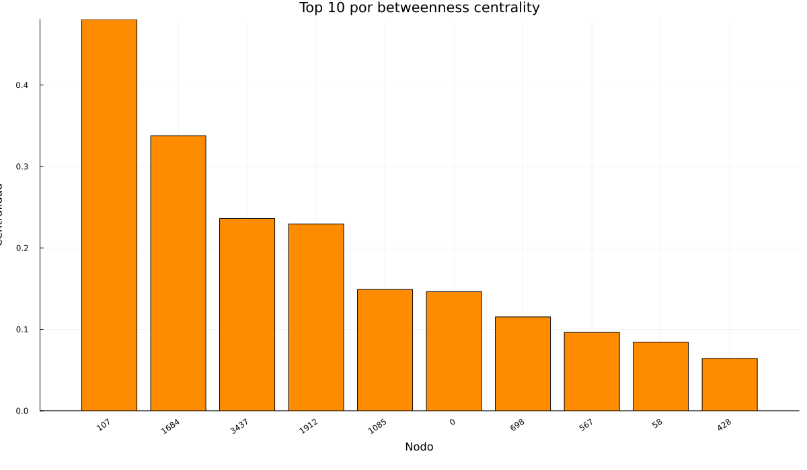
Destaca los nodos que actuan como puentes entre regiones de la red social.
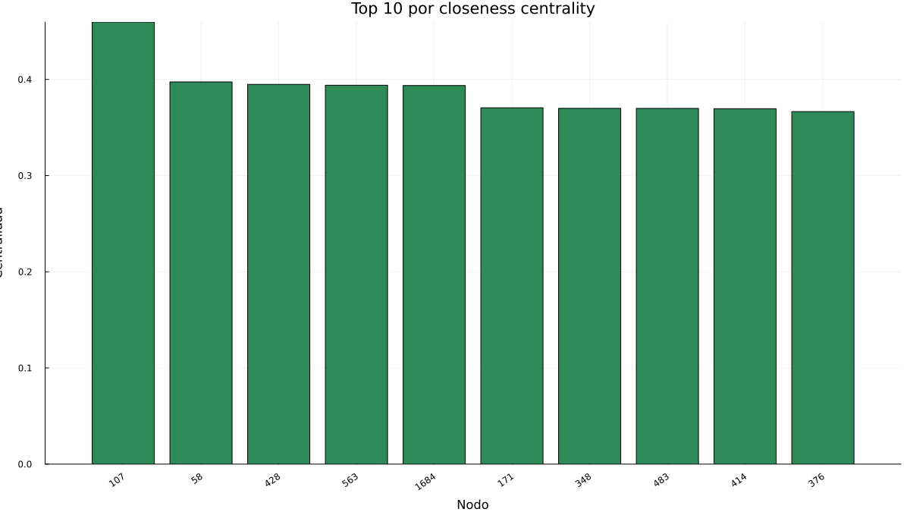
Resume los nodos con acceso mas rapido al resto de usuarios de la red.
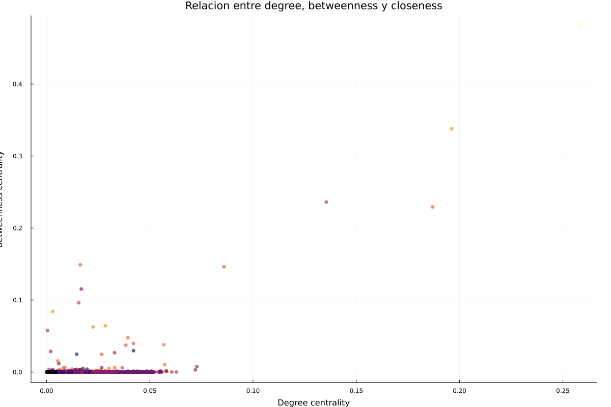
Cada punto representa un usuario. El eje X usa degree centrality, el eje Y betweenness centrality y el color closeness centrality.
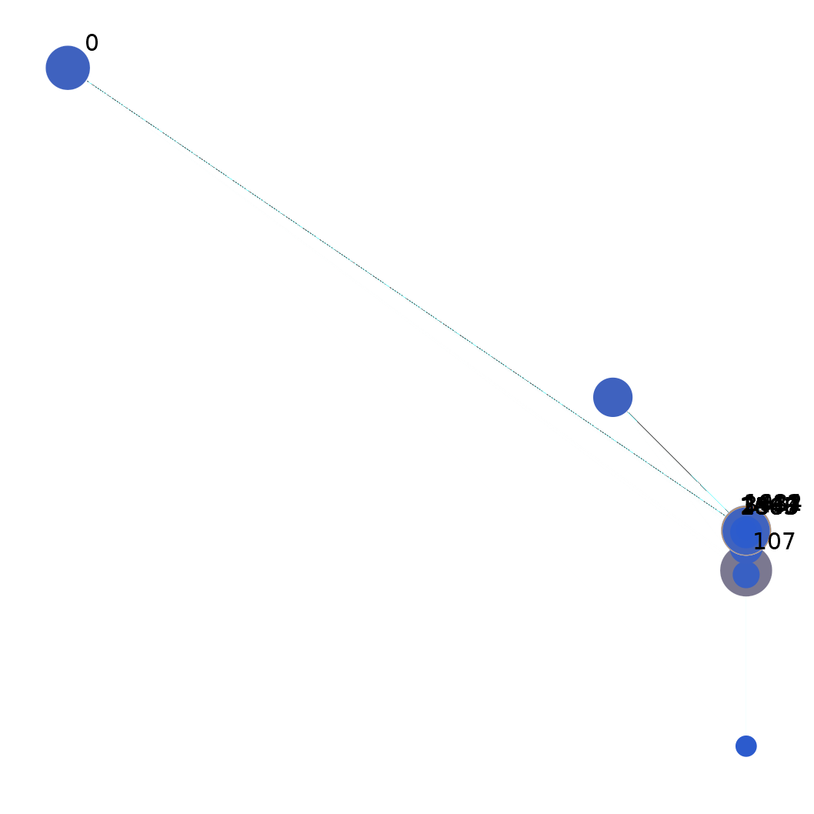
Vista general de la red completa renderizada con Cairo. El tamano del nodo refleja su grado, el color resume su nivel de insercion en el nucleo de la red y solo se etiquetan los 10 nodos mas populares para mantener legibilidad.
| Indicador | Valor |
|---|---|
| Componentes conectados | 1 |
| Tamano del componente gigante | 4039 |
| Porcentaje del componente gigante | 100.0% |
| Densidad | 0.01081996 |
| Grado promedio | 43.691 |
| Grado mediano | 25.0 |
| Percentil 90 del grado | 113.0 |
| Grado maximo | 1045 |
| Clustering global | 0.519174 |
| Clustering local promedio | 0.605547 |
| Assortativity | 0.063577 |
| Diametro | 8 |
| Radio | 4 |
| Maximo k-core | 115 |
| Promedio de k-core | 26.8797 |
| Participacion de los 10 nodos mas conectados | 2.72% |
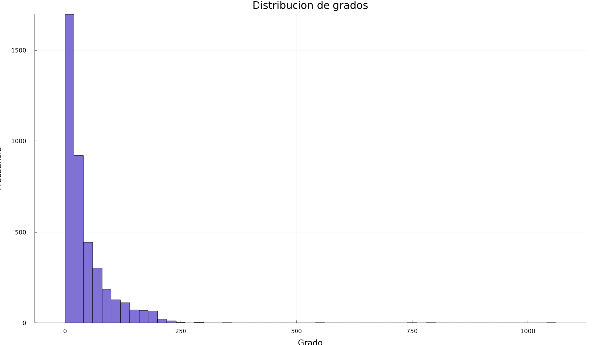
La forma de la distribucion ayuda a detectar hubs y desigualdad en el numero de conexiones.
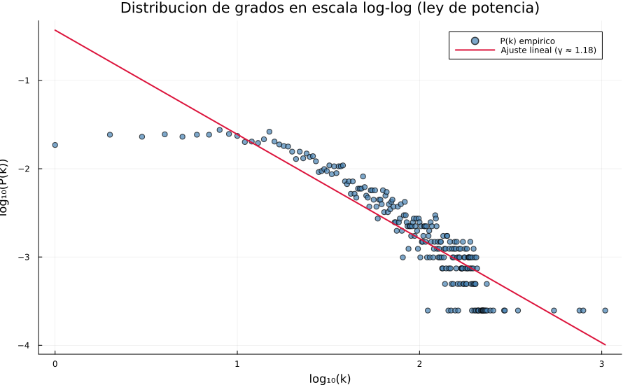
La escala log-log permite verificar si la red sigue una ley de potencia P(k) ~ k^(-γ). El exponente ajustado es γ ≈ 1.18. Valores tipicos en redes sociales reales: 2 < γ < 3. Una linea recta en log-log confirma estructura libre de escala (scale-free).
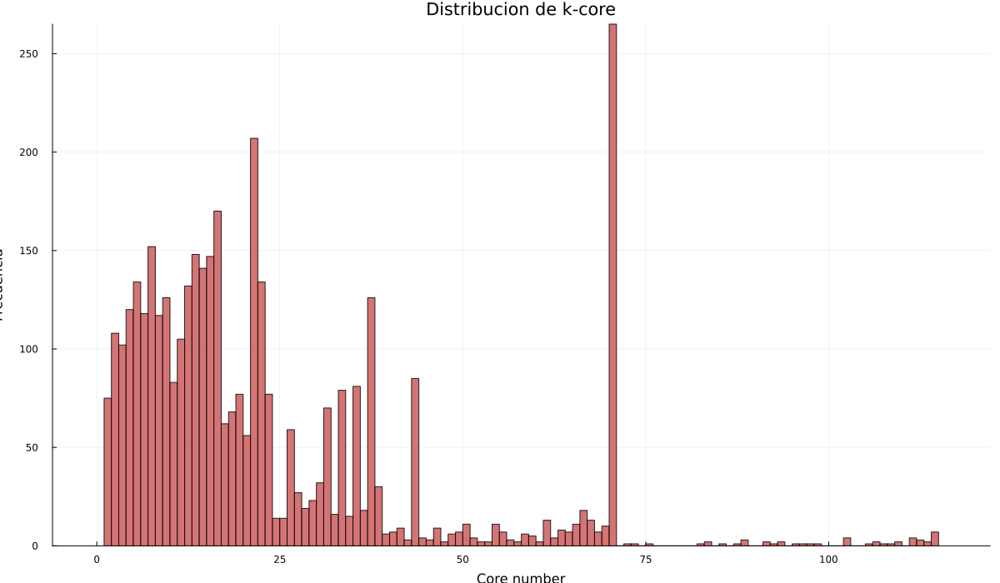
Resume que tan profundamente insertados estan los nodos dentro de nucleos densos de la red.
| Indicador | Valor |
|---|---|
| Nodos en el subgrafo | 10 |
| Aristas entre los 10 mas populares | 11 |
| Densidad del subgrafo | 0.244444 |
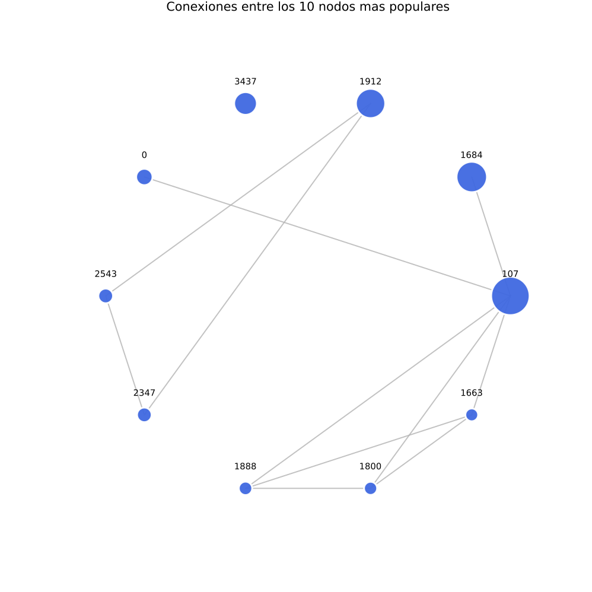
Este subgrafo muestra solo los usuarios con mayor degree centrality y las conexiones que existen entre ellos. Permite ver si los hubs tambien estan conectados entre si o si concentran enlaces hacia la periferia.
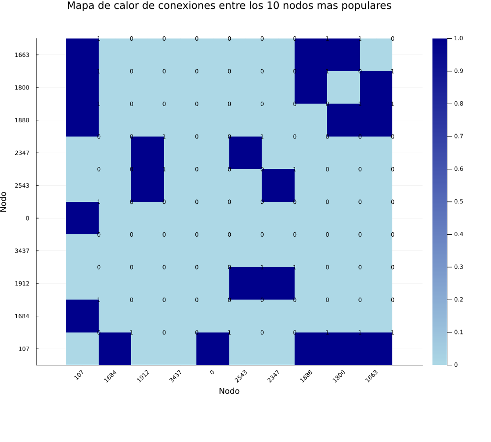
El mapa de calor resume la matriz de adyacencia del top 10. Las celdas con valor 1 indican conexion directa entre dos nodos populares y facilitan detectar bloques conectados sin la maraña visual del grafo completo.
| Rank | Nodo | Valor |
|---|---|---|
| 1 | 107 | 0.258791 |
| 2 | 1684 | 0.196137 |
| 3 | 1912 | 0.186974 |
| 4 | 3437 | 0.135463 |
| 5 | 0 | 0.085934 |
| 6 | 2543 | 0.072808 |
| 7 | 2347 | 0.072065 |
| 8 | 1888 | 0.062902 |
| 9 | 1800 | 0.060674 |
| 10 | 1663 | 0.058197 |
| Rank | Nodo | Valor |
|---|---|---|
| 1 | 107 | 0.480518 |
| 2 | 1684 | 0.337797 |
| 3 | 3437 | 0.236115 |
| 4 | 1912 | 0.229295 |
| 5 | 1085 | 0.149015 |
| 6 | 0 | 0.146306 |
| 7 | 698 | 0.11533 |
| 8 | 567 | 0.09631 |
| 9 | 58 | 0.08436 |
| 10 | 428 | 0.064309 |
| Rank | Nodo | Valor |
|---|---|---|
| 1 | 107 | 0.459699 |
| 2 | 58 | 0.397402 |
| 3 | 428 | 0.394837 |
| 4 | 563 | 0.393913 |
| 5 | 1684 | 0.393606 |
| 6 | 171 | 0.370493 |
| 7 | 348 | 0.369916 |
| 8 | 483 | 0.369848 |
| 9 | 414 | 0.369543 |
| 10 | 376 | 0.366558 |